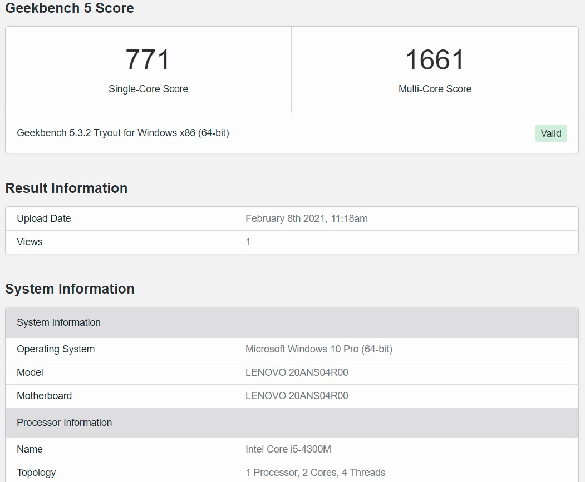

Seitdem ich mein T440p im Juni 2019 zum Geburtstag bekommen habe, ist es praktisch mein Ein und Alles.
Davor saß ich mit einem über 10 Jahre alten eMachines E525 ohne funktionierendem Display,
einer im Sterben liegenden HDD und einem lahmen Celeron. Mit dem T440p habe ich Arbeiten durchgeführt,
Schulaufgaben bearbeitet, Fernsehinhalte aufgezeichnet, meine Webseite kreiert usw.
Im Laufe der Zeit wurden auch einige Upgrades durchgeführt:
- Display-Upgrade von TN auf IPS
- T440 ClunkPad durch T450 TouchPad ersetzt
- 1 TB HDD im Ultrabay
- OEM SSD auf eine Kingston A400 240 GB aufgerüstet
- Intel Wireless-N 7260 --> Wireless-AC 3160 für AC-WLAN
- BIOS-Mod (Whitelist-Entfernung und erweitertes Menü)
Kürzlich bestellte ich mir auch noch 16 GB HyperX 1866MHz RAM, nur stellte sich leider raus,
dass eins von den Modulen defekt war, weshalb ich sie auch wieder zurückschicken musste.
Jedoch fehlte immer dieser eine Leistungsschub, womit ich mein T440p für deutlich mehr einsetzen könnte.
Natürlich war es die CPU. Der i5-4300M, der im Notebook steckt, reicht zwar für die gängigsten Aufgaben mehr als genug,
spätestens dann kommt es aber an seine Grenzen, wenn man sich in Richtung Videoschnitt, virtuelle Maschinen oder ähnliches bewegt.
Stellt sich die Frage, was kann man so für CPUs einbauen?
Da gibt's glücklicherweise so einige, die je nach Anforderungen den Dienst erfüllen:
| Kompatible CPUs | ||||
|---|---|---|---|---|
| Modelle | Kerne (Threads) | Taktfrequenz (GHz) | Boost-Takt (GHz) | TDP |
| i7-4600M | 2 (4) | 2,9 | 3,6 | 37W |
| i7-4700MQ | 4 (8) | 2,4 | 3,4 | 47W |
| i7-4710MQ | 4 (8) | 2,5 | 3,5 | 47W |
| i7-4702MQ | 4 (8) | 2,2 | 3,2 | 37W |
| i7-4712MQ | 4 (8) | 2,3 | 3,3 | 37W |
| i7-4800MQ | 4 (8) | 2,7 | 3,7 | 47W |
| i7-4810MQ | 4 (8) | 2,8 | 3,8 | 47W |
| i7-4900MQ | 4 (8) | 2,8 | 3,8 | 47W |
| i7-4910MQ | 4 (8) | 2,9 | 3,9 | 47W |
- 4600M: In meinen Augen nur ein höher getakteter i5, für die, die viel Single-Core-Leistung benötigen
- 4702MQ/4712MQ: Die CPU ist interessant für die, die auf ein Quad-Core gehen wollen,
sich aber weniger um die Kühlung sorgen wollen.
Mit seinen 37W TDP, die gleiche Verlustleistung wie beim i5,
solte der Rechner in Bezug auf Temperaturen überhaupt keine Probleme haben.
- 4910MQ: Wer das Beste vom Besten haben will, was die Kühlung liefern kann und bereit ist, dafür zu zahlen?
Ein Wort zum 4980HQ Mod: Wer bereit ist, gewaltige Änderungen am Kühlsystem durchzuführen und auf DisplayPort am Laptop verzichten kann,
für den kann dieser Prozessor aus China vorallem wegen der Iris 5200 iGPU 'ne interessante Wahl sein.
Je nach Preis kann sich eine CPU mehr lohnen als die andere. Mein 4810MQ habe ich für 65 Euro abgreifen können.
Bevor wir zum Upgrade kommen, hier einmal die Benchmark-Ergebnisse vor dem Upgrade mit dem i5-4300M:
